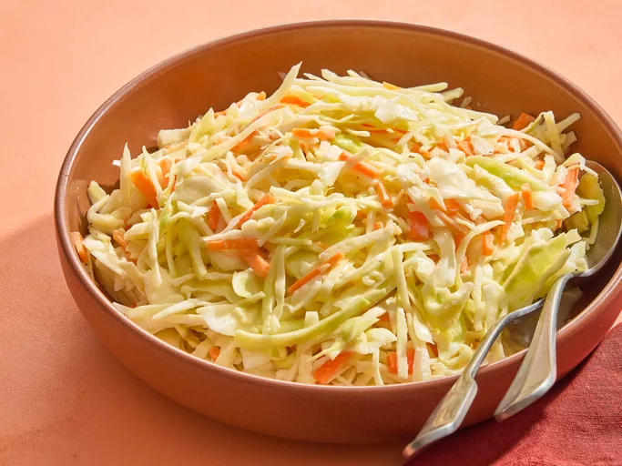

Home
Coleslaw Recipe

This colorful southern coleslaw is sure to brighten up any table.
Ingredients
- 1 head cabbage, finely shredded
- 2 carrots, finely chopped
- 2 tablespoons finely chopped onion
- ½ cup mayonnaise
- ⅓ cup white sugar
- ¼ cup milk
- ¼ cup buttermilk
- 2 tablespoons lemon juice
- 2 tablespoons distilled white vinegar
- ½ teaspoon salt
- ⅛ teaspoon ground black pepper
Directions
- Gather the ingredients.
- Whisk mayonnaise, sugar, milk, buttermilk, lemon juice, vinegar, salt, and black pepper in a separate bowl until smooth and sugar has dissolved.
- Mix cabbage, carrots, and onion in a large salad bowl.
- Pour dressing over cabbage mixture and mix thoroughly.
- Cover bowl and refrigerate slaw at least 2 hours (the longer the better). Mix again before serving.